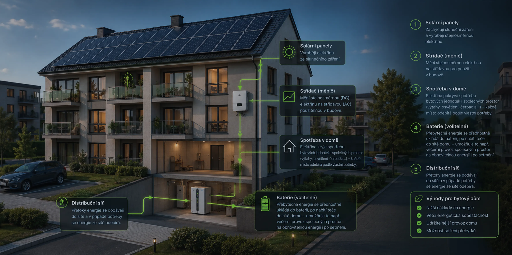
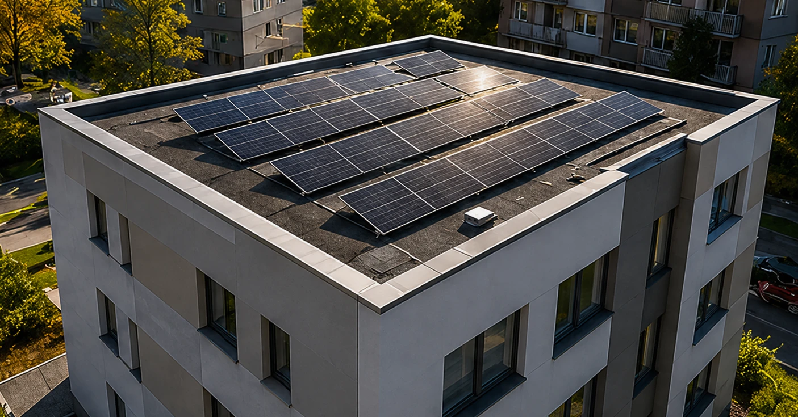

Zjistěte, jak střecha vašeho domu může vyrábět elektřinu pro společné prostory nebo přímo pro byty – a kdy se investice reálně vrátí.
Co je FVE
FV panely na střeše vyrábí elektřinu ze slunečního světla. Střídač ji převede do podoby, kterou budova spotřebuje, a rozvaděč ji rozdělí tam, kde je zrovna potřeba – do společných prostor, do bytů nebo do baterie. Přebytky odchází do distribuční sítě.
Přebytky výroby, které budova v daný moment nespotřebuje, putují do bateriového úložiště nebo do sítě. Baterie zachytí denní přebytky a uvolní je v hodinách, kdy panely nevyrábí – čímž snižuje množství elektřiny, které musí budova nakoupit od distributora.

Rozcestník témat
Ekonomická návratnost FVE pro bytový dům
Kritéria pro bytový dům: orientace střechy, spotřeba, časový horizont. Kdy investice smysl nedává.
Baterie k FVE – dimenzování a podmínky výnosnosti
Kdy baterie přidává hodnotu, jak dimenzovat kapacitu a co znamená záloha pro výpadek sítě.
Náklady na FVE pro bytový dům
Interaktivní kalkulačka nákladů, položkový rozpis a orientační ceny pro různé výkony systému.
Podmínky a legislativa pro FVE
Podmínky bezúročného úvěru NZÚ – výpočtový vzorec, způsobilost SVJ a legislativní rámec.
Hodnocení nabídky od dodavatele FVE
Co by měla nabídka obsahovat, jak ověřit cenu, na co si dát pozor a jak srovnat 3 nabídky vedle sebe.
Bezpečnost FVE
Statický posudek, PBŘ, projektová dokumentace, revize a hasicí přístroj – co musí každá instalace splnit.
Koupě × Pronájem
Fáze realizace
Kalkulačka
Bez baterie: přebytky odchází do distribuční sítě.
Porovnání ročních úspor
S JOM pokryje FVE celý dům, nejen společné prostory.
Detailní formulář připraví podklady pro konkrétní nabídky od dodavatelů.
Parametry z kalkulačky
Dodavatelé obdrží podklady a připraví nabídky. Výsledky očekávejte do 5 pracovních dnů na zadaný e-mail.
Případová studie

Šestipodlažní bytový dům s 24 byty, orientace střechy na jihojihovýchod. SVJ hledalo způsob, jak trvale snížit zálohy na energie. Kombinace FVE, baterie a JOM dnes pokrývá 58 % roční spotřeby celého domu – zálohy klesly první rok provozu přesně dle projektu.
Klíčem k pokrytí 58 % roční spotřeby není jen výkon panelů – bez baterie 30 kWh by výrobní špičky z poledne odcházely do sítě nevyužity. Baterie zachytí denní přebytky a prostřednictvím JOM je uvolní do bytů večer, čímž minimalizuje množství elektřiny nakoupené od distributora.
FAQ
Ano – pro SVJ je to dnes standardní cesta. Instalace na střechu bytového domu do výkonu 100 kW nevyžaduje ani stavební povolení, ani ohlášení stavby. Nutné je hlasování vlastníků; potřebná většina se řídí stanovami SVJ, nejčastěji jde o nadpoloviční většinu přítomných nebo o kvalifikovanou většinu (např. 2/3) u rozsáhlejších technických zásahů.
Existují dva různé modely. Jednotné odběrné místo (JOM) sloučí celý dům do jednoho odběrného místa vůči distributorovi – elektřina se pak rozvádí mezi byty uvnitř domu, bez průchodu přes distribuční síť. Sdílení elektřiny (komunitní energetika) naopak ponechává každému bytu vlastní odběrné místo a virtuálně mezi nimi přerozděluje vyrobenou elektřinu přes distribuční síť pomocí Elektroenergetického datového centra, podle klíče nastaveného SVJ. Přebytky nad rámec nastavené alokace se prodávají nebo ukládají do baterie.
Ne, k rozhodnutí o instalaci FVE stačí kvorum určené stanovami SVJ, nejčastěji nadpoloviční většina přítomných na shromáždění nebo kvalifikovaná většina vlastnických podílů. U zavedení JOM je ale potřeba počítat s tím, že jednotlivec, který souhlas neudělí, může technicky zůstat na svém původním samostatném odběrném místě – jde totiž o jeho osobní smlouvu s dodavatelem elektřiny.
Projekt a případná povolení: 2–4 měsíce. Samotná instalace na střeše: 2–5 dní podle velikosti systému. Zprovoznění, nastavení JOM nebo sdílení elektřiny a registrace u distributora: dalších 1–2 týdny. Od prvního jednání SVJ po první kilowatthodinu ze střechy tak uplyne typicky 3–6 měsíců.
Přebytky, které nezachytí baterie a nespotřebují byty, se prodávají zpět do distribuční sítě za výkupní cenu, typicky 1–1,5 Kč/kWh. Bateriové úložiště zachytí špičky výroby a přesune je do večerních hodin – snižuje tím množství prodávané energie za nízkou cenu a zvyšuje míru vlastní spotřeby.
Solární panely jsou nejdlouhověčnější částí systému – výrobci garantují minimálně 80 % výkonu po 25 letech, reálná životnost přesahuje 30 let. Střídač (invertor) vydrží 10–15 let a bývá jedinou větší výměnou za dobu provozu. Baterie mají životnost 10–15 let dle hloubky vybíjení.
SVJ si sám nastaví klíč rozdělení – nejčastěji podle podílu na společných částech domu (stejně jako fond oprav) nebo podle skutečné spotřeby jednotlivých bytů. Klíč lze kdykoli změnit rozhodnutím shromáždění. Detailní pravidla se zapracují do interní směrnice SVJ nebo smlouvy o JOM.
Zpravidla ne – FVE je dnes standardní technologie a většina pojišťoven ji do pojistné smlouvy zahrne bez navýšení pojistného. Před instalací je vhodné informovat pojišťovnu a ověřit, zda smlouva pokrývá i technologii na střeše. Některé pojišťovny nabízejí rozšíření o připojištění FVE systému.
Výrobci LFP baterií garantují typicky 3 000–6 000 plných cyklů při 80% hloubce vybití – při jednom cyklu denně to odpovídá přibližně 8–16 letům provozu. Kapacita baterie v průběhu let postupně klesá; po dosažení zárukou stanovené hranice (obvykle 70–80 % původní kapacity) je baterie funkční, ale ukládá méně energie. Výměna celého úložiště nebo jeho části je předvídatelný náklad – kvalitní nabídky ji vyčíslují předem jako součást ekonomické analýzy projektu.
Li-ion baterie při poruše nebo přehřátí mohou způsobit tzv. tepelný únik (thermal runaway) – intenzivní hoření, které je obtížné hasit standardními prostředky. Proto se baterie v bytových domech umísťují do oddělených větraných technických místností s požárními dveřmi a specifickým požárně bezpečnostním řešením (PBŘ). LFP chemie (lithium-železo-fosfát) je v tomto ohledu výrazně bezpečnější než starší NMC nebo NCA chemie. V místnosti s baterií je vhodné mít hasicí přístroj určený pro lithiové baterie a provádět pravidelné revize.
Zkuste vyhledat dané téma na webu.